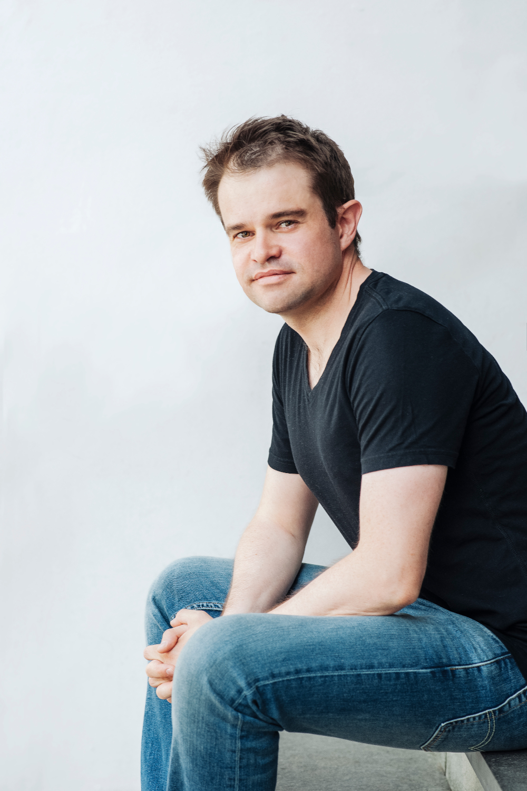

About Me

I'm an astronomer, writer and data scientist who has worked on multiple large astronomy datasets over the last decade and a half. My research focusses on studying failed stars known as brown dwarfs, exoplanets and low-mass stars using survey data.
A quick bio
- Born: 1982, Falkirk, Scotland, UK
- Education:
- Master of Physics in Astrophysics, University of Edinburgh, 2003
- PhD in Astrophysics, University of Edinburgh, 2007
- Jobs
- 2017-2019 : DFG-funded Postdoctoral Researcher, MPIA, Heidelberg
- 2014-2019: Centre for Astrophysics Research Fellow, University of Hertfordshire
- 2011-2014: Planet and Star Formation Departmental Fellow, MPIA, Heidelberg
- 2009-2011: Postdoctoral Researcher, University of Hawai`i
- 2006-2009: Postdoctoral Researcher, Radboud University, Nijmegen
- Python
- C
- IDL
- English (native speaker)
- German (intermediate)
- Dutch (basic)
Frequently asked questions
- How do you pronounce Niall? To rhyme with "heel", it's a pronounciation that's reasonably common in Scotland as opposed to the Irish pronounciation that rhymes with "dial"